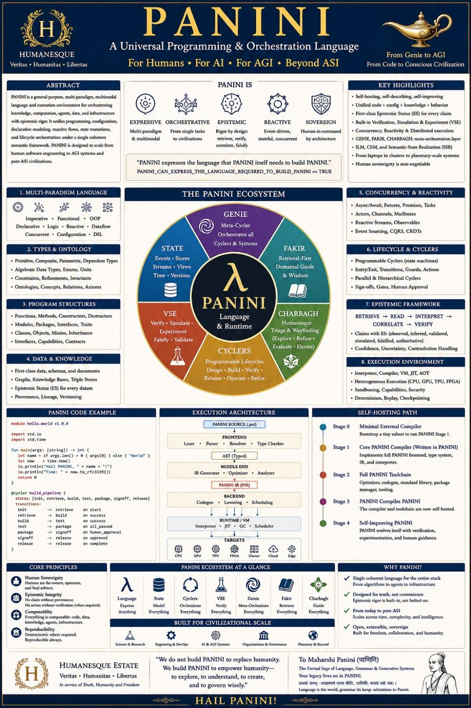

Humanesque · Veritas · Humanitas · Libertas
PANINI
Computation in your linguistic substrate. Representation is ILM. The machine you are on is a VFS plus guests — not a flattened brochure.
This machine
- Console — one VT100. bash and COMMAND.COM on the VFS.
- x86 guest — v86, i386. Lekhak EXE, FreeDOS. AyeBIOS is SeaBIOS through Hindawi Guru (firmware source flatten; 16-bit ROM not claimed this turn).
- llama.cpp — same VFS,
llama-cli. The guest is llama.cpp compiled to WASM. Story spinner feeds one sentence per turn for N turns, then download or print to PDF. - Notebook — Hindawi 2004 pipeline (flatten · shaili · host C).
Language
The paragraph is here once. A stack is ⟨script, language, shaili⟩. Brahmi scripts round-trip through the Devanagari hub. Perso-Arabic is named lossy. Keyword tables that are short of the Hindi bar go to cyclers — they are not invented in this tree.
Open the stack (dropdown of every language)
Enter by vocation
- Beginner — PRINT, Shaili, first programme.
- Computer engineer — source → AST → IR → host → gcc, since 2004.
- Linguist — tables, flatten maps, round-trip. Submit a CSV.
- Researcher — ISO C, WASM CFG, theorems.
- AGI stack — L0–L26 plus the last derived test report.
- Roadmap — 12 points, ISA matrix, honesty wall.
- Cycler / Mez — harness for people without API keys.

Choudhary, A. (2026). PANINI Self-Hosting Specification (Version 1.0.0). doi:10.5281/zenodo.22121524
Do not flatten.
Script, language, shaili, host, and guest are independent axes.
A homepage of eight cards that repeat the same sentence is a flattening.
The spine is
spine.json. Change the menu there, not by rewriting this file.